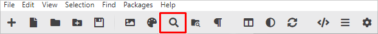
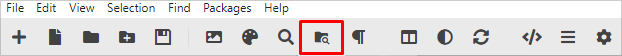

Outras funcionalidades da barra de tarefas podem ser consideradas “secundárias” e às vezes passarem despercebidas, mas ainda assim contribuem para um desenvolvimento dinâmico e fazem a diferença na experiência final.
Procure por uma ou mais palavras e substitua pelo conteúdo desejado.

Procure por uma ou mais palavras e substitua pelo conteúdo desejado em todos os arquivos de um determinado projeto.

Procure por uma ou mais palavras e substitua pelo conteúdo desejado em todos os arquivos de um determinado projeto.